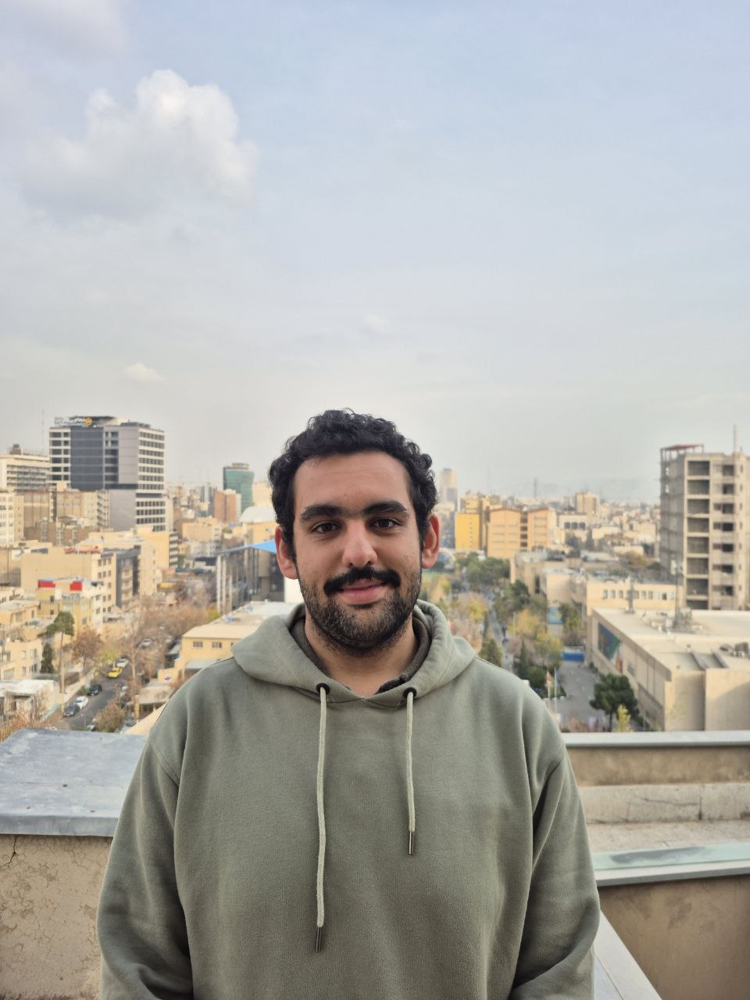
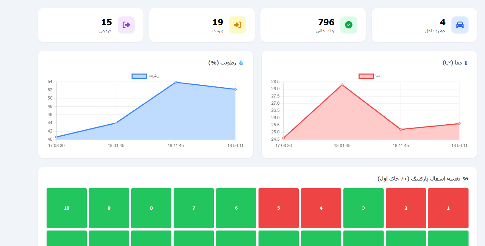
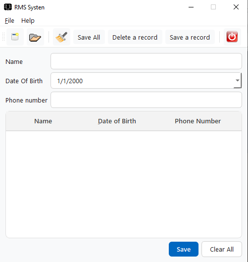
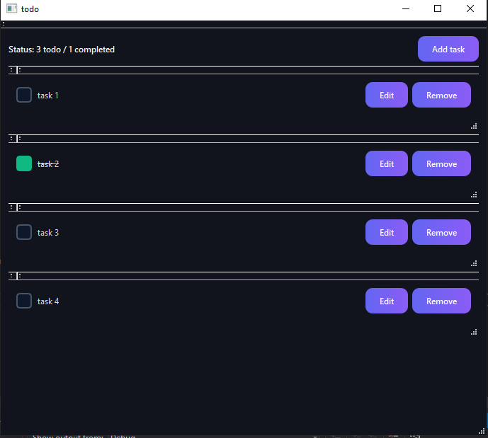
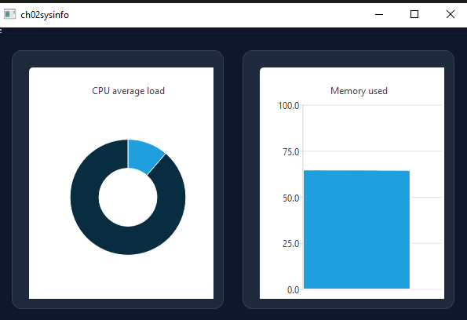

electrical engineering, built with precision.
Undergraduate at Amirkabir University of Technology (Tehran Polytechnic). I work at the seam where firmware meets hardware — ESP32 data acquisition, VHDL on FPGA, Qt desktop applications, Django services. Teaching assistant for Electromagnetics and Digital Logic Design.

selected work
Every entry below is a repository you can open and read. No screenshots of things that do not exist, no metrics I did not measure.

Smart Parking DAQ System & IoT Control
- ESP32
- C++
- Python
- SQLite
- Proteus
End-to-end data-acquisition and control system for a multi-storey car park: RFID and ANPR two-factor vehicle authentication, ultrasonic and Hall-effect cross-verified occupancy sensing, PID-driven servo barrier with an active IR break-beam anti-pinch trigger, and live telemetry to a web dashboard and a Telegram bot. Instrumentation and Measurement course project, built with Erfan Ashkesh and Mani Mohammadi.
Team of three · AUT →
[Hamming ECC Layer]
Hardware Packet Processor with Hamming ECC
- VHDL
- FPGA
- ModelSim
- RTL
A modular RTL packet engine: SIPO/PISO serialisation layers, an ALU execution core, an 8×32 RAM block, and a finite-state control unit, wrapped in a Hamming encoder/decoder that flags, isolates and repairs single-bit inversions in transit. Digital design and control-unit architecture were my half; verification and the ECC pipeline were Parsa Bishe's.
Two authors · digital design lead →

Learning Qt
- C++
- Qt 5 / 6
- Qt Creator
The foundational groundwork before entering production-grade system designs. Focuses on learning Qt core layouts, widgets, signals and slots, custom dialog interactions, and compiles a complete, fully functional bilingual task manager (ToDo) with a custom, handcrafted Cyber Dark QSS stylesheet, as well as multi-document word processors and data managers. Exercises worked from Getting Started with Qt 5.
Bilingual documentation · Foundation →


Qt Deep Dive
- C++17
- Qt 6
- QSS
- SQLite
- MSVC
A fourteen-chapter engineering log through modern Qt desktop architecture,
rebuilt rather than transcribed. Complete features include:
Chapter 1 (ToDo) — a component-driven task manager running on pointer-to-member signals with lambda event capture;
Chapter 2 (SysInfo) — a cross-platform hardware monitor reading
/proc/stat, GetSystemTimes, and Mach host statistics behind a unified polymorphic singleton with live Qt Charts visualizations;
Chapter 3 (gallery-core) — a modular database-driven shared library containing domain models, a secure Meyers-singleton DatabaseManager, and thread-safe Model/View adapters.
In progress · 3 of 14 chapters · Dual-Screenshot →
[PIR Motion Sensor]
[Beam Breaker]
Smart Door Lock System
- MFRC522
- PIR
- Assembly
- Solenoid
An access-control build assembled module by module rather than all at once: MFRC522 RFID read/write and card identification, PIR presence detection at the door, an optical break-beam barrier for entry and exit tracking, and relay-switched electric lock actuation. Each module has its own test phase in the repository before integration.
Phased hardware build →
I would rather build the thing than write about building it.
- Studying
- B.Sc. Electrical Engineering (Control Major · Electronics Minor), Amirkabir University of Technology (Tehran Polytechnic)
- Teaching assistant
- Electromagnetics (Dr. Askarpour) and Digital Logic Design (Dr. Pourfard), separate semesters
- Focus
- Embedded data acquisition, VHDL on FPGA, Qt desktop applications, Django web services
what i actually use
Grouped by where it sits in a build, not by how confident it sounds. Anything I have only read about is not on this list.
| Layer | Tools | Used in |
|---|---|---|
| Silicon | ESP32 · ESP32-S3 · ATmega32 · FPGA | Parking DAQ, door lock, Hamming |
| Hardware description | VHDL · RTL design · ModelSim | Packet processor, logic lab |
| Firmware | C · C++ · AVR assembly · Arduino | All embedded builds |
| Application | C++17 / Qt 6 · Python · Django | Qt Deep Dive, web services |
| Data | SQLite · PostgreSQL · Redis · Celery | Parking telemetry, shop backend |
| Bench | Proteus · oscilloscope · Git · Linux | Every project above |
web designs
Selected web interfaces and storefront systems I have engineered. Links are active templates; I will wire their full production destinations soon.
[E-Commerce Platform]
[Active Storefront Template]
Mahgol Resin E-Commerce Storefront
- Django
- Celery
- Redis
- Tailwind CSS
- Telegram Bot
A high-performance production e-commerce engine integrated with an active Telegram notification bot for seamless purchase workflows. Features a royal purple and gold theme customized to match the brand's exact design palette, asynchronous order dispatching with Celery, and real-time database-driven product inventory management.
Production-grade storefront · Template active
[UI/UX Design Spec]
[Clean Minimal Layout]
Minimalist Portfolio & Project Index
- HTML5
- CSS Grid
- OKLCH Tokens
- CDP Auditor
A pristine, high-contrast digital index engineered with pure CSS custom properties, flexible responsive column-collapsing, and verified with zero-issue CDP automation. Optimized to serve as a fast-loading central portal for engineering logs, academic coursework, and live software demos.
Custom UI template · Ready to route
about
I am an electrical engineering undergraduate at Amirkabir University of Technology. Most of what I know came from projects that did not work the first time — a servo that jittered until the PWM channel was right, a decoder that passed simulation and failed on the board, a Django worker that died quietly every night at three.
I prefer hardware you can touch and courses you can teach. Two semesters as an undergraduate teaching assistant — Electromagnetics with Dr. Askarpour, Digital Logic Design with Dr. Pourfard — taught me that explaining a concept twice is the fastest way to find the hole in your own understanding of it. My academic path is anchored on a Control Systems major, actively reinforced with an Electronics minor.
This page is an index, not a pitch. If something here is relevant to you, the repository is one click away and the commit history is honest about how long it took.
internships & active research
Active focus areas, real-world learning logs, and industrial internships.
SCADA Security & Substation Automation (Modje Niroo Internship): I am currently passing an engineering internship at Modje Niroo, actively analyzing, studying, and documenting conventional substations, DCS (Distributed Control Systems), and national SCADA telemetry layouts in Iran's power grid.
My current research focuses on the IEC 61850, DNP3, IEC 60870-5-104, and Modbus protocol chains. Specifically, I am compiling detailed technical logs on GOOSE message retransmission latency under heavy traffic spikes, RTU marshalling logic, FEP gateway mapping, and compiling risk matrices for potential cybersecurity threat vectors on industrial dispatching.
get in touch
Telegram is checked daily. Drop a direct message there.
- GitHub
- @Mahbodbe
- mahbod-bemanicham
- mahbod2023@gmail.com